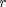
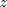
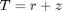
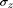
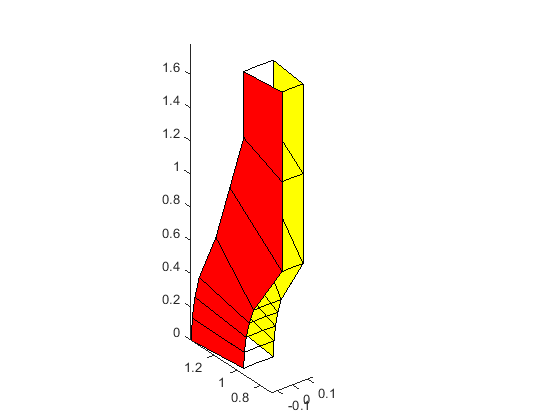
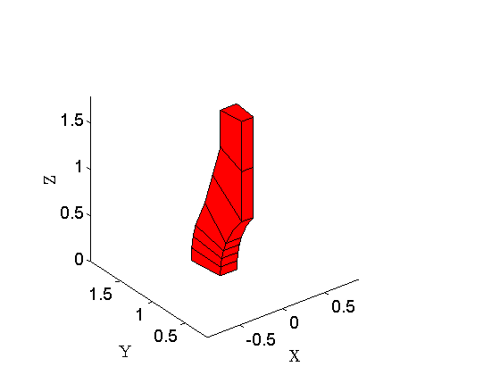
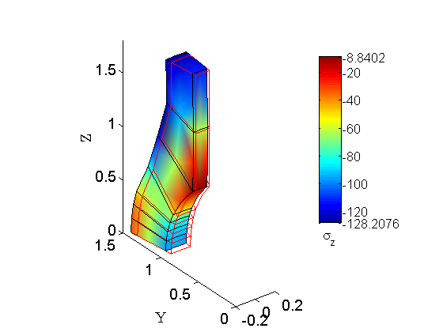

Solid cylinder/taper/sphere—-temperature loading; quadratic brick mesh
Contents
Link to the m-file.
Description
The solid cylinder/taper/sphere axially-symmetric part represented in Figure 1 is exposed to linearly varying temperature in the plane of the cross-section. The temperature in the coordinates  (the coordinate) and  (the axial ccoordinate) is given as . The goal is to find the mechanical stress at the point A induced by the thermal expansion.
 |
| Figure 1. Definition of the geometry of the part |
The part is constrained against axial expansion along the faces of HIH'I' and ABA'B'. The Young's modulus is 210 GPa, the Poisson's ratio is .3, and the coefficient of thermal expansion is 2.3e-4/degree Celsius.
This is a test recommended by the National Agency for Finite Element Methods and Standards (U.K.): Test LE11 from NAFEMS Publication TNSB, Rev. 3, “The Standard NAFEMS Benchmarks,” October 1990.
Target solution: Compressive axial stress  = –105 MPa along the circle passing through point A.
Solution
function pub_LE11NAFEMS_H20
The toolkit has a helpful physical-units facility. The variable pu is a structure with fields that define basic units and basic multipliers (for instance, mega).
pu= physical_units_struct;
Set the material properties.
Ea= 210000*pu.MEGA*pu.PA;% Young's modulus nua= 0.3;% Poisson ratio alphaa=2.3e-4;% coefficient of thermal expansion
This is the target stress value.
sigma_z_A_ref=-105*pu.MEGA*pu.PA;
The mesh will be created in a very coarse representation from the key points in the drawing. The first coordinate is radial, the second coordinate is axial.
rz=[1. , 0.;%A 1.4 , 0.;%B 0.995184726672197 0.098017140329561; 1.393258617341076 0.137223996461385; 0.980785,0.195090;% 1.37309939,0.27312645; 0.956940335732209 0.290284677254462 1.339716470025092 0.406398548156247 0.9238795, 0.38268;%C 1.2124, 0.7;%D 0.7071, 0.7071;%E 1.1062, 1.045;%F 0.7071, (0.7071+1.79)/2;%(E+H)/2 1. , 1.39;%G 0.7071, 1.79;%H 1. , 1.79;%I ]*pu.M; tolerance =1e-3*pu.M;% geometrical tolerance fens=fenode_set(struct('xyz',rz)); % The finite elements in the cross-section as quadrilaterals fes=fe_set_Q4(struct('conn',[1,2,4,3;3,4,6,5;5,6,8,7;7,8,10,9;... 9,10,12,11;11,12,14,13;13,14,16,15]));
If needed, the initial mesh can be refined by bisection. Just set nref greater than zero. Note that the nodes located along the edges are moved onto the spherical surface when they should be on the spherical surface. This is important in order to ensure convergence to the proper value of the stress. Just refining the initial mesh without repositioning of the nodes onto the spherical surface would mean that the refinement would preserve a concave corner where in reality there is none. The stress would be artificially raised and convergence would not be guaranteed.
nref= 0;
for ref=1:nref
[fens,fes]=Q4_refine(fens,fes);
list=fenode_select(fens,struct('distance',1.0+0.1/2^nref,'from',[0,0],...
'inflate', tolerance));
fens= onto_sphere(fens,1.0,list);
end
The mesh is extruded by sweeping around the axis of symmetry. Only a single layer of elements is generated of internal angle angslice.
nLayers=1;
angslice =pi/16;
First the mesh is extruded to a block whose third dimension represents the angular coordinate.
[fens,fes] = H8_extrude_Q4(fens,fes,nLayers,@(rz,k)[rz,0]-(k-1/2)/nLayers*[0,0,angslice]);
The mesh is now converted to the serendipity 20-node elements. We will reposition the nodes later.
[fens,fes]=H8_to_H20(fens,fes);
The boundary of the block is extracted and the faces of the mesh on the bounding cross-sections are identified. Recall that this is just about the topology (connectivity), the geometry does not matter at this point.
bfes=mesh_boundary(fes);
f1l=fe_select (fens,bfes,...
struct('box',[-inf,inf,-inf,inf,-angslice/2,-angslice/2],'inflate',100*eps));
f2l=fe_select (fens,bfes,...
struct('box',[-inf,inf,-inf,inf,angslice/2,angslice/2],'inflate',100*eps));
The block is now converted to the actual geometry by using the third (angular) coordinate to sweep out an axially symmetric domain. The ccoordinates of the nodes at this point are rza, radial distance, Z-coordinate, angle.
fens = transform_apply(fens,...
@(rza,~)[-rza(1)*sin(rza(3)),rza(1)*cos(rza(3)),rza(2)], []);
The mesh is now drawn as a check. The volume elements are drawn in wireframe, and the two bounding cross-sections are in solid color.
gv=drawmesh({fens,fes},'fes','facecolor','none');
gv=drawmesh({fens,subset(bfes,f1l)},'gv',gv,'fes','facecolor','y');
gv=drawmesh({fens,subset(bfes,f2l)},'gv',gv,'fes','facecolor','r');
labels ([])
 The nodes within the radial distance of 1.0 of the origin (i. e. those on the spherical surface) are repositioned one more time to be located on the spherical surface for sure. (Recall that we have inserted additional nodes at the midpoints of the edges when the mesh was converted to quadratic elements.)
list=fenode_select(fens,struct('distance',1.0+0.1/2^nref, 'from',[0,0,0],... 'inflate', tolerance)); fens= onto_sphere(fens,1.0,list);
The mesh is drawn again as a check.
drawmesh({fens,fes},'fes','facecolor','red');
view(3)
labels
 We are ready to create the finite element model machine and to use it to construct the global system for the displacements.
The material is created from the property object. Note that the alpha attribute is the thermal expansion coefficient.
propa = property_deformation_linear_iso ... (struct('E',Ea,'nu',nua,'alpha', alphaa)); matera = material_deformation_linear_triax (struct('property',propa));
The finite element model machine puts together the material, the finite elements, and the integration rule. The Gauss quadrature with 3x3x3 points gives good accuracy in this case. Compare it with 2x2x2 quadrature to appreciate the difference.
femma = femm_deformation_linear (struct ('material',matera,... 'fes',fes,... 'integration_rule',gauss_rule (struct('dim',3, 'order',3))));
The geometry nodal field is created from the node set. The displacement field is created by cloning the geometry and then zeroing out the nodal parameters.
geom = nodal_field(struct ('name',['geom'], 'dim', 3, 'fens',fens)); u = clone(geom,'u'); u = u*0; % zero out
The EBCs are applied next. Only the axial (Z) degrees of freedom at the bottom and top are fixed to zero.
ebc_fenids=[fenode_select(fens,struct('box',[-inf inf -inf inf 0 0],'inflate', tolerance)),... fenode_select(fens,struct('box',[-inf inf -inf inf 1.79 1.79],'inflate', tolerance))]; ebc_fixed=true;% The degrees of freedom are being fixed. ebc_comp=3;% The axial (Z) component is being fixed ebc_val=0;% Set to zero for the prescribed degrees of freedom. u = set_ebc(u, ebc_fenids, ebc_fixed, ebc_comp, ebc_val);
The restraints of the nodes on the bounding cross-sections in the direction of the normal to the plane of the cross-section in the circumferential direction are introduced using a penalty formulation. For that purpose we introduce a finite element model machine for the surface finite elements on the cross-sections.
spring_coefficient =1 / ((abs(sigma_z_A_ref)/1e12)/Ea)
sfemma = femm_deformation_linear (struct ('material',matera,...
'fes',subset(bfes,[f1l,f2l]),...
'integration_rule',gauss_rule (struct('dim',2, 'order',3)),...
'surface_normal_spring_coefficient',spring_coefficient));
spring_coefficient = 2.0000e+15
The EBCs are applied and the degrees of freedom are numbered.
u = apply_ebc (u);
u = numberdofs (u);
We create the temperature field using the formula .
x=fens.xyz;
dT = nodal_field(struct ('name',['dT'], 'dim', 1, ...
'data',sqrt(x(:,1).^2+x(:,3).^2)+x(:,2)));
And we are ready to assemble the system matrix. Both the elastic stiffness of the hexahedral... elements key…
K = stiffness(femma, sysmat_assembler_sparse, geom, u);
... and the elastic stiffness of the springs on the contact surfaces of the cross-sections.
H = surface_normal_spring_stiffness(sfemma, sysmat_assembler_sparse, geom, u);
The mechanical loads are computed from the thermal strains.
F = thermal_strain_loads(femma, sysvec_assembler, geom, u, dT);
And the solution for the free degrees of freedom is obtained.
u = scatter_sysvec(u, (K+H)\F);
The stress is recovered from the stress calculated at the integration points. The method field_from_integration_points_spr uses the Super convergent Patch Recovery (SPR) to compute the nodal stress from the quadrature-point stresses.
cmpn=3;% this is the axial stress (sigma_Z) flda = field_from_integration_points_spr(femma, geom, u, dT, 'Cauchy', cmpn);
Now that we have the nodal field for the axial stress, we can plot the axial stress painted on the deformed geometry.
figure('visible', 'off') gv=graphic_viewer; gv=reset (gv,struct ('limits', [-0.2, 0.2, 0, 1.5, 0, 1.8])); nvalsa=flda.values/(pu.MEGA*pu.PA); dcm=data_colormap(struct ('range',[min(nvalsa),max(nvalsa)], 'colormap',jet)); colorfield=nodal_field(struct ('name', ['colorfield'], 'data',map_data(dcm, nvalsa))); draw(femma, gv, struct ('x',geom,'u', 100*u, 'colorfield',colorfield, 'shrink',1));
The undeformed geometry is shown using an outline.
draw(mesh_boundary(femma.fes,[]), gv, struct ('x',geom,'u', 0*u, 'facecolor','none','edgecolor','r')); draw_colorbar(gv,struct('position',[0.72 0.33 0.05 0.5],... 'minmax',dcm.range,'label','\sigma_{z}')); view (3) labels set(gcf,'visible', 'on')
The computed stress at the node that is located at the point A is going to be now extracted from the nodal field for the stress.
l1=fenode_select(fens,struct('distance',1.0+0.1/2^nref, 'from',[0,0,0],... 'inflate', tolerance)); l2 =fenode_select(fens,struct('box',[-inf inf -inf inf 0 0],'inflate', tolerance));; nA =intersect(l1,l2); sigmaA =mean(nvalsa(nA)); disp(['Stress at point A: ' num2str(sigmaA) ', i. e. ' num2str(sigmaA*pu.MEGA*pu.PA/sigma_z_A_ref*100) ' %'])
Stress at point A: -94.927, i. e. 90.4067 %
Discussion
The 3-D solution corresponds well to the 2-D axially symmetric model. We also see good correspondence to other published solutions for comparable finite element models. For instance, Abaqus 6.11 Benchmark manual lists very similar numbers.
end